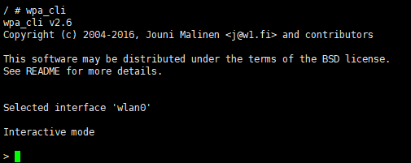

5. Wi-Fi Operation¶
5.1. STABasic Mode Operations¶
5.1.1. Load the driver¶
Steps 1. Driver
need /mnt/system/ko/3rdunder already under ofFile， ModuleLoadnot ko:
[root@cvitek]/mnt/system/ko/3rd# ls 8188fu.ko 8189fs.ko
Note， wifiDriverand inlinuxSource CodeContentsin the tree， with build-in， Build ko。
insmod /mnt/system/ko/3rd/8189fs.ko or insmod /mnt/system/ko/3rd/8188fu.ko
Steps2. ViewDriver Success
Executeshell Command：
ifconfig -a
If Success，caninExecuteshellCommandafter to wlan0Ethernet Port

5.1.2. Start Wi-Fi and connect to the AP¶
Steps1. Wlan0Ethernet Port
scExecuteshellCommand：
ifconfig wlan0 up
Steps2. wpa_supplication
Execute shell Command：
echo "ctrl_interface=/var/run/wpa_supplicant" >/tmp/wpa_supplicant.conf wpa_supplicant -iwlan0 -Dnl80211 -c/tmp/wpa_supplicant.conf &
-iwlan0 IndicatesUsewlan0Interface
-Dnl80211 IndicatesUsecfg80211Interface
Steps3. wpa_cli
ExecuteshellCommand：
wpa_cli -i wlan0
ExecuteSuccess “>”

Steps4. Scan Nearby NetworksAP
in “>” afterExecuteas followsCommand：
scan
in “CTRL-EVENT-SCAN-RESULTS”after, Execute
scan_results
can toScanResult
Steps 5. AP
ConfigurationisWPA-PSK/WPA2-PSKAuthentication and EncryptionTypeMethodofAP
in“>” afterExecuteas followsCommand，with ID （ Exampleinis0）：
add_networkConfiguration ofSSID （ ExampleinofSSIDisSW-test， Steps4 ）
set_network 0 ssid “SW-test”Configuration EncryptionMethodandPassword ( SW-testPasswordis012345678)
set_network 0 psk “012345678”select_network 0toCTRL-EVENT-CONNECTED，If ， Indicates Success。orcanExecute”status”Command，Query Connection Status

Input“quit” wpa_cli, ExecuteshellCommandas followswith IPAddress
udhcpc -b -i wlan0 -R &ExecutepingCommand, with , ex.
Ping 8.8.8.8
Configurationisopen systemofAP
StepsandConfigurationisWPA-PSK/WPA2-PSKAuthentication and EncryptionTypeMethod ， inConfigurationThe network encryption method requires enteringas followsCommand：
set_network 0 key_mgmt NONE
5.1.3. Disable Wi-Fi and unload the driver¶
Steps 1. Executeshell Commandas follows：
ifconfig wlan0 down
Steps 2. Executeas followsshellCommand:
rmmod 8189fs.ko or rmmod 8188fu.ko
5.2. SoftAPBasic Mode Operations¶
5.2.1. Load the driver¶
DriverMethodandSTAMode ，PleaseRefer toChapter 5.1.1.Load the driver
5.2.2. hostapdConfiguration, udhcpd Configuration, and SoftAP Startup¶
SoftAPneed hostapd。andwpa_supplicant ，hostpadCan ConfigurationAP of ，withand Flow。
Steps1. hostpad。ExecuteshellCommands
ifconfig wlan0 192.168.1.1 up hostapd /etc/network/hostapd.conf -B -i wlan0
Steps2. udhcpdwith IP ，Executeshell Commands
udhcpd /etc/network/udhcpd.conf
Note：
can Modifyhostapd.conf ConfigurationSoftAPofssid, channel, Encryption Methodetc.， inSDK of/ramdisk/rootfs/overlay/{chip_name}/etc/network or on the platformof/etc/network。for examplecanModifyssidwithandwpa_passphrase ConfigurationAP Namewithand Password
interface=wlan0 ctrl_interface=/var/run/hostapd ssid=CV184X_EVB channel=6 wpa=3 wpa_passphrase=012345678
canRefer to: http://manpages.ubuntu.com/manpages/bionic/man5/udhcpd.conf.5.html
can Modifyudhcpd.conf ConfigurationSoftAP ofIP 。udhcpd.conf inSDK of/ramdisk/rootfs/overlay/{chip_name}/etc/network or on the platformof/etc/network。
# The start and end of the IP lease block start 192.168.1.10 #default: 192.168.0.20 end 192.168.1.254 #default: 192.168.0.254